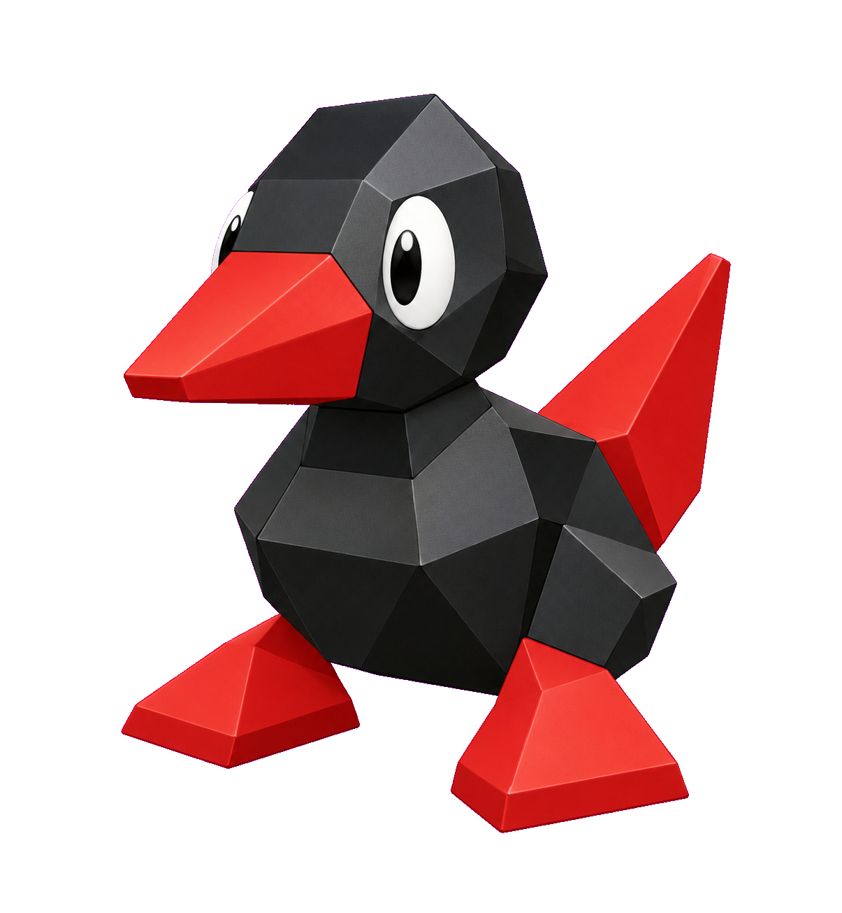

NICK SOON’S FIELD NOTES
ONE YEAR.
SO MANY
SIDE QUESTS.
From “what’s for dinner?” to building worlds.
A collection of things I explored and made with AI.
JANUARY — OCTOBER 7, 2026

49 collected entries10 months of curiosity18 project cardsPROJECTS · QUESTIONS · EXPERIMENTS
THE 2026 COLLECTION
Pick a side quest.
Finished files, early prototypes, and ideas along the way.
Look for “View the work” to open previews and demos.
No entries in this selection.
Try another month, topic, or search.
BEHIND THE COLLECTION
Curiosity is
the through line.
Cooking, games, language learning, teaching, print design, and web experiments. This archive brings the small everyday questions and the bigger builds into one place.
A few things worth knowing
- Project ≠ finished product
- Open “View the work” for original artwork, interactive previews, and available files. Entries without a shareable artifact are labeled “Read the story.”
- A collection, not a complete log
- These are verified, shareable examples recovered for January through October 7, 2026. Missing entries do not mean nothing happened.
- Summaries stay public-safe
- Private conversations, client material, and personal records are not reproduced. Dates mark a recorded conversation, saved file, or project creation, in UTC.